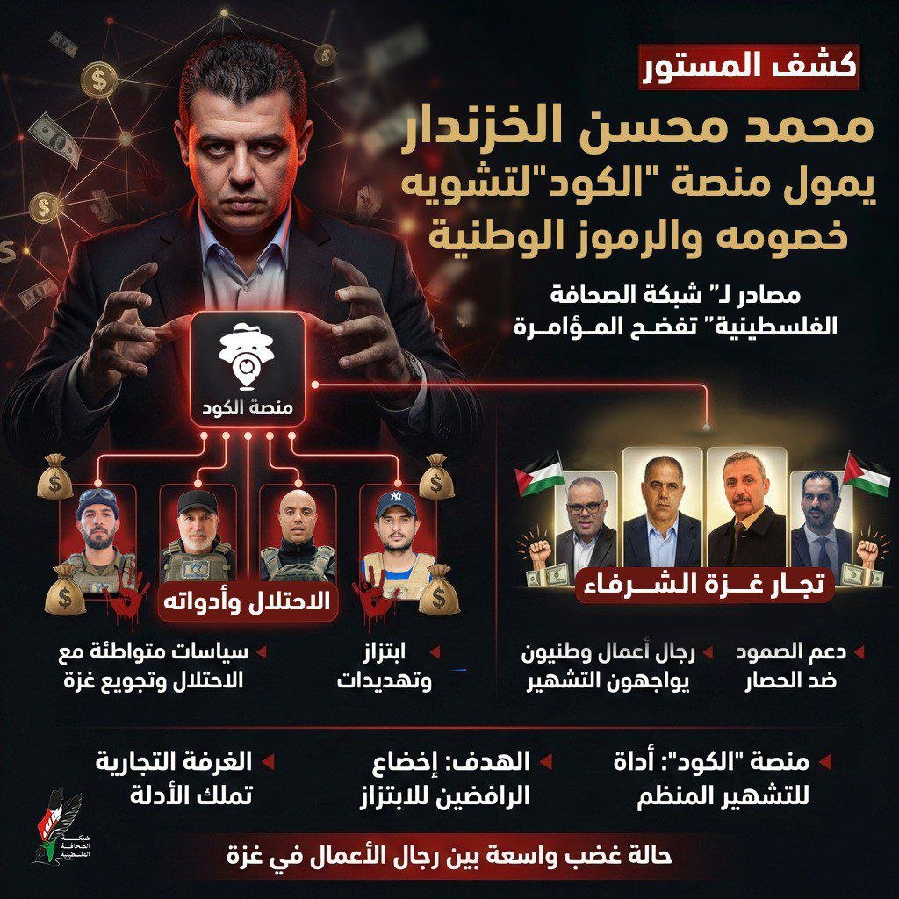
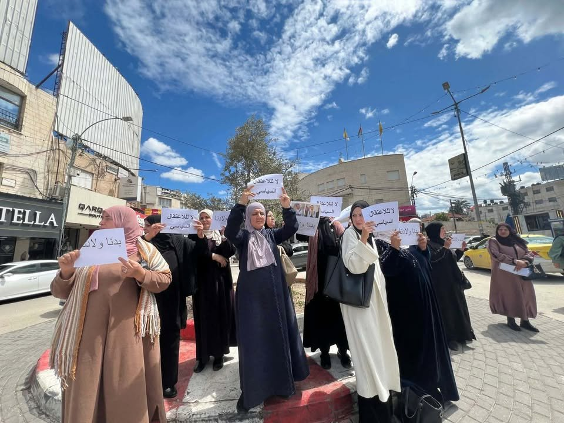
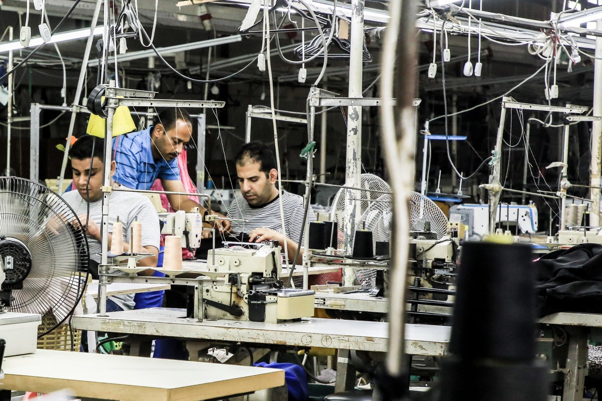
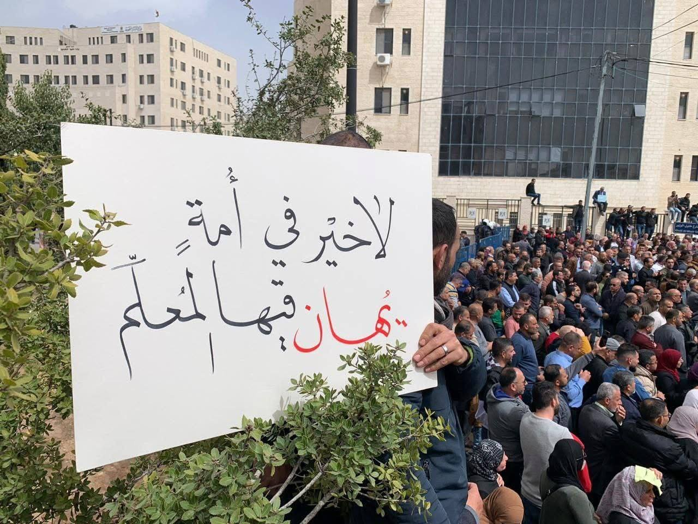
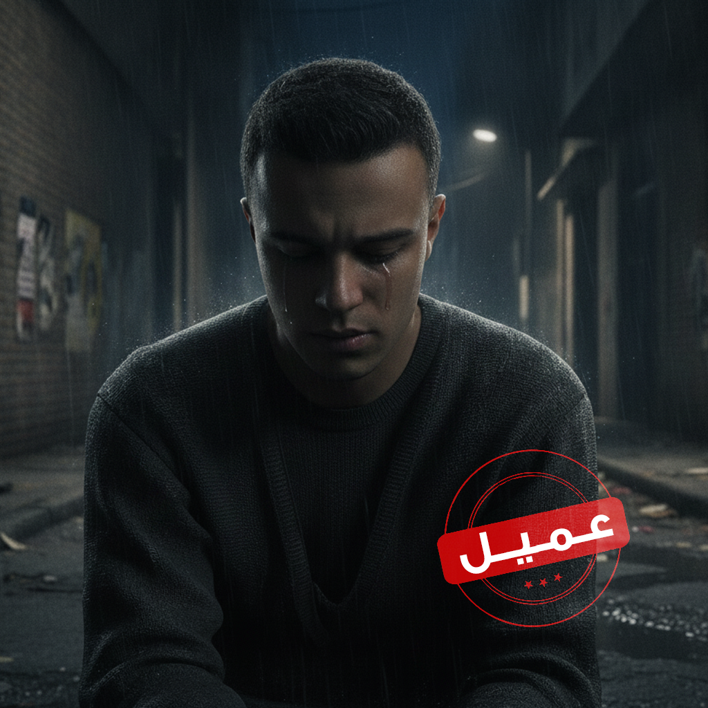

معالجات اخبارية
معالجات اخبارية
لماذا ستفشل دعوات الفوضى في غزة عبر «حراك ٢٦ يونيو»؟
قراءة في خلفيات الحراك وأهدافه المعلنة والخفيّة وحدود تأثيره على المشهد الميداني.
أرشيف كامل للمعالجات الإخبارية والتحليلات والقصص المرئية — ابحث وصفِّ حسب التصنيف ونوع المحتوى والفترة الزمنية.
معالجات اخبارية
قراءة في خلفيات الحراك وأهدافه المعلنة والخفيّة وحدود تأثيره على المشهد الميداني.
 تحليلات وآراء
تحليلات وآراء
المؤتمر الأخير أعاد رسم موازين القوى داخل الحركة وسط تساؤلات حول مستقبل التمثيل.
 معالجات اخبارية
معالجات اخبارية
قرار وقف المخصصات يضع مئات الأسرى المحرّرين أمام واقع معيشي قاسٍ.
 ميديا
ميديا
وثائق وشهادات حصرية تكشف شبكة العلاقات والتمويل بين العصابات وأجهزة الاحتلال.
 القصة في أرقام
القصة في أرقام
رصد بصري لتطوّر الخروقات على مدى ٢٤٥ يوماً عبر رسوم بيانية تفاعلية.

القصة في صوروقفة احتجاجية في جنين تسلّط الضوء على ملف الاعتقال السياسي والتعذيب.
 معالجات اخبارية
معالجات اخبارية
تلخيص صوتي مولّد بالذكاء الاصطناعي لأبرز ما نشرته الشبكة خلال ٢٤ ساعة.
 معالجات اخبارية
معالجات اخبارية
أزمة مالية خانقة تهدّد الخدمات الصحية في عدة محافظات بالضفة الغربية.

تحليلات وآراءتحليل لأبعاد الخطوة وتداعياتها على موازين القوى في المنطقة.

معالجات اخباريةوقفات احتجاجية متفرّقة في جنين ونابلس تطالب بإطلاق سراح المعتقلين.

القصة في أرقام٣٧٧ خرقاً موثّقاً خلال أبريل وحده في عرض بياني مقارن.

تحليلات وآراءكيف تحوّلت حسابات بعينها إلى أداة لتوجيه الرأي العام قبل الحراك؟
جرّب تعديل كلمات البحث أو إزالة بعض الفلاتر.